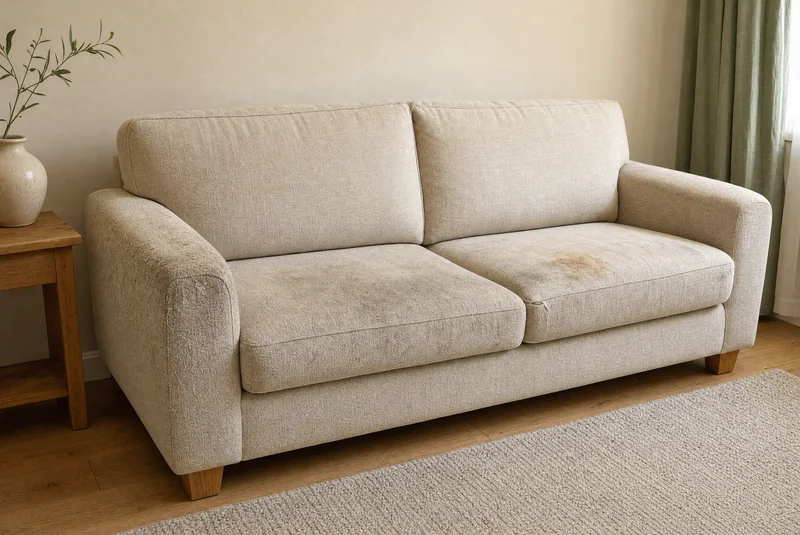
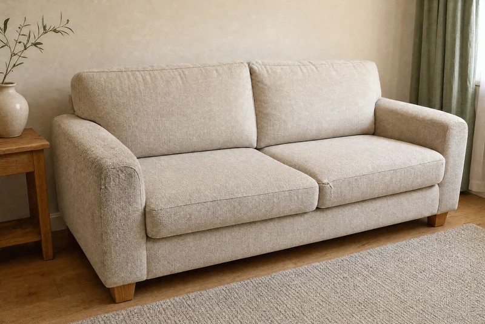
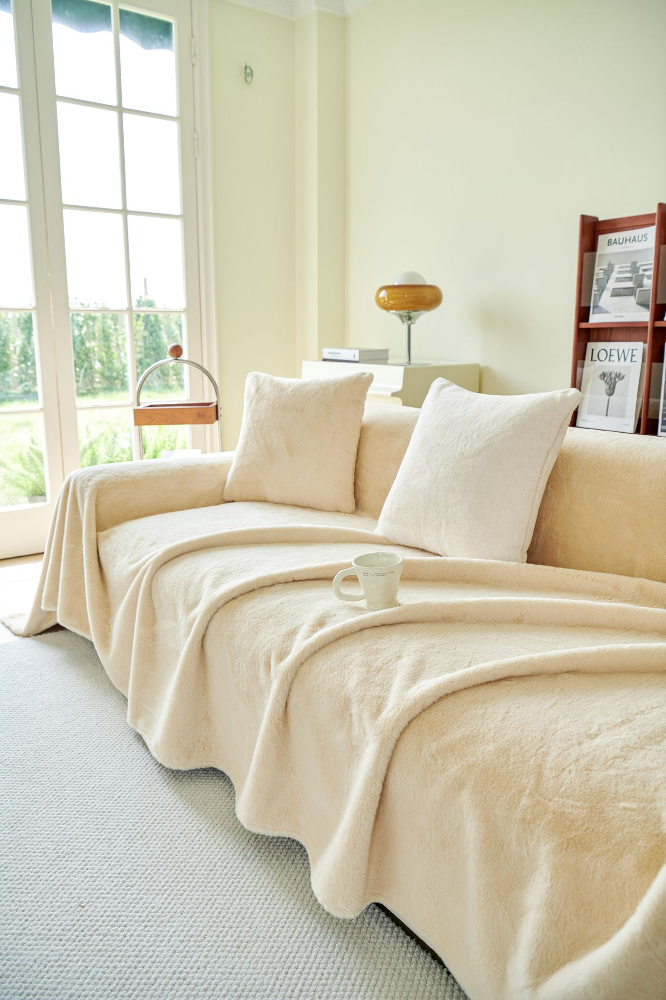
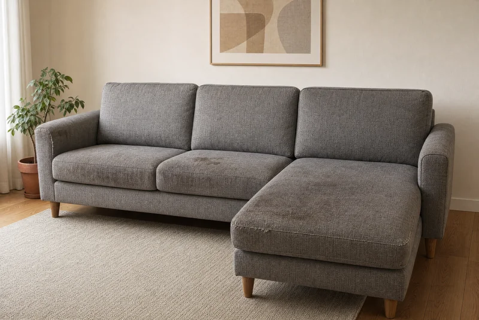
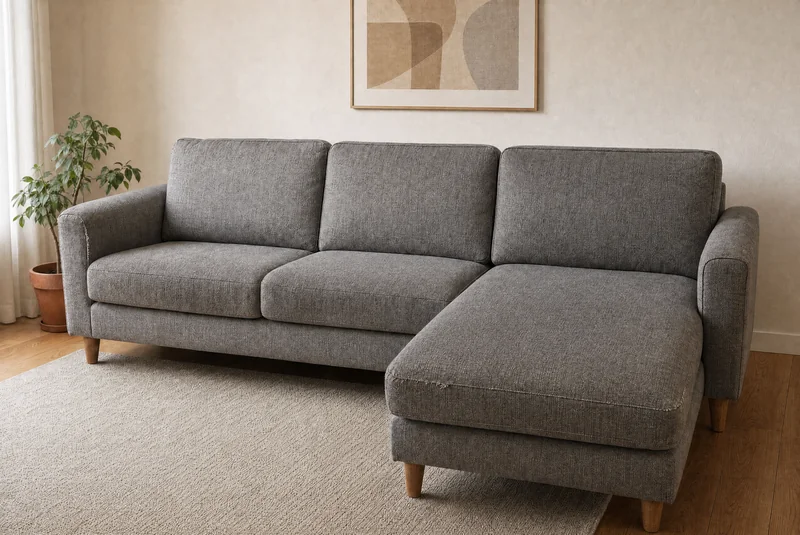
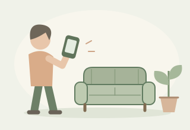
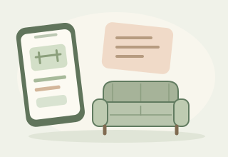
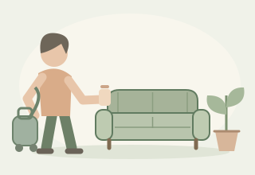
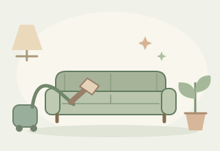
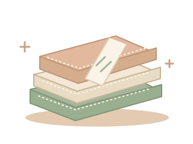

Светлый прямой диван
Следы чая и повседневные загрязнения


Чистка освежает ткань. Потёртости и повреждённый шов сохраняются.
ЗАБОТА О ТОМ, ЧТО ДОМА
Бережная химчистка диванов на дому.
Начнём с фото — разберёмся с обивкой
и обсудим, что можно сделать.
Демо: только тестовые данные.
Сначала посмотрим на диван.
Потом — предложим подход.

ЧТО МОЖЕТ ИЗМЕНИТЬСЯ
Два примера, чтобы представить разницу.
Фактура, износ и следы времени остаются.
Следы чая и повседневные загрязнения


Чистка освежает ткань. Потёртости и повреждённый шов сохраняются.
Загрязнения на сиденьях и подлокотнике


Оттенок обивки сохраняется. Износ ткани остаётся частью её истории.
Сгенерированные примеры для демонстрации. Реальный результат зависит от ткани и загрязнения.
ЗАБОТА ШАГ ЗА ШАГОМ
Так могла бы проходить чистка
в нашем вымышленном сервисе.

Сфотографируйте общий вид и крупный план загрязнения. Снимки помогут начать разговор об обивке.

Укажите форму дивана, число мест, обивку и описание. Если знаете происхождение пятна, расскажите о нём.

Осматривает ткань, проверяет реакцию на средство на незаметном участке и согласовывает подход.

Экстрактор собирает загрязнения и лишнюю влагу. Мастер объясняет, как высушить диван и ухаживать за ним дальше.
БЕРЕЖНО К ТОМУ, ЧТО ВАЖНО
У обивки есть свой характер. Поэтому начинаем с осмотра и разговора, а решение подбираем под ваш диван.
Заранее расскажите о чувствительности к запахам и особых требованиях. Средства и порядок использования мебели после чистки согласуйте со специалистом.
Результат зависит от материала, происхождения и давности загрязнения, а также от прежних попыток чистки. Возможности и ограничения специалист обсуждает после осмотра.
Это зависит от ткани, влажности и условий в комнате. Специалист подскажет, как организовать сушку и проверить готовность обивки перед использованием.

При заказе химчистки — комплект салфеток
из микрофибры в подарок.